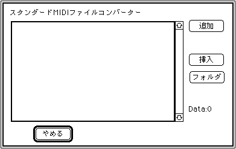

★SOUND Manual
★サウンドシュミレータマニュアル
★SOUND Manual
★サウンドシュミレータマニュアル
▲
戻る｜
進む▼
サウンドシュミレータマニュアル
スタンダードMIDIファイルのコンバート
- ここを選択すると、次のダイアログボックスが開きます。

ここに表示されるのは、［追加］または［挿入］で選択したソング名の一覧で、コレクトリストと呼びます。
最初はなにも表示されず、［追加］または［挿入］で追加・挿入していきます。
［ファイル］［コレクトファイル］［コレクトファイルを開く］でコレクトリストを読み込めば毎回［追加］または［挿入］で登録せずにすみます。
Shift+マウス操作、で複数のファイルを選択してまとめてコンバートが可能です。
- 追加
- ここでコレクトリストにソング名を追加します。追加したいソング名を選択すると、コレクトリストの最後にそのソング名が追加されます。
- 挿入
- ここでコレクトリストにソング名を挿入します。コレクトリスト上で挿入したい場所をクリックし、その後でソング名を選択します。コレクトリストで選択したソング名の直前にここで選択したソング名が挿入されます。
- フォルダ
- Addの時と同じ標準選択ダイアログが出てきます。ここで選択されたファイルを内包する、フォルダーに存在するすべてのMIDIファイルをエントリーさせます。
- やめる
- このダイアログボックスを閉じます。
▲
戻る｜
進む▼
★SOUND Manual
★サウンドシュミレータマニュアル
Copyright SEGA ENTERPRISES, LTD., 1997